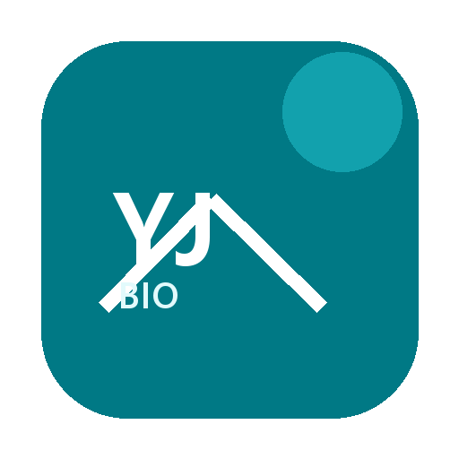
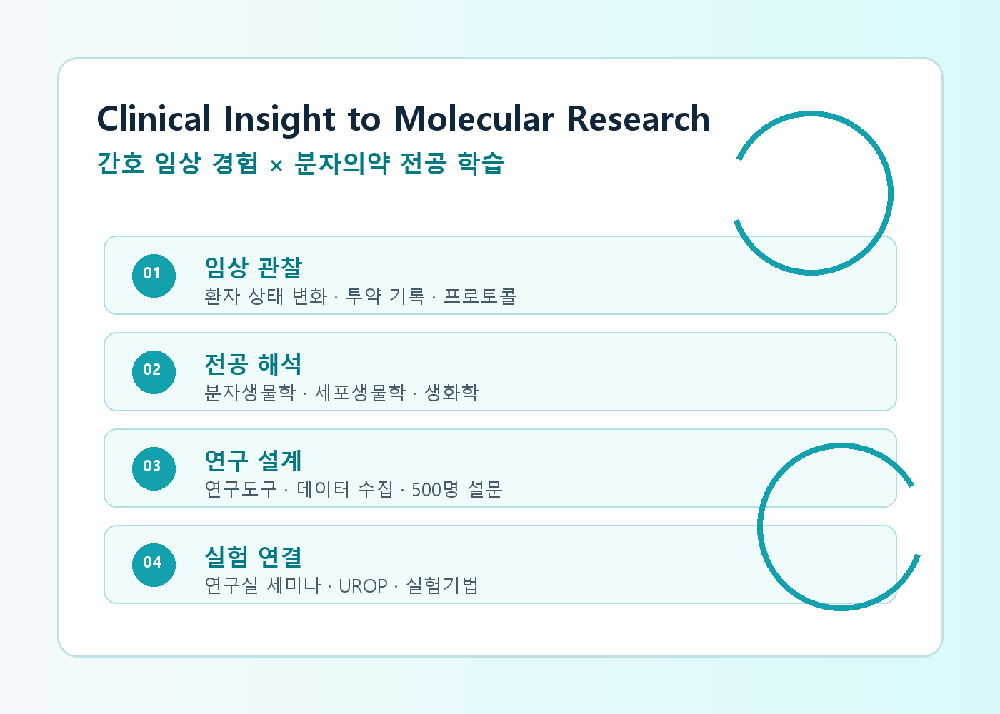
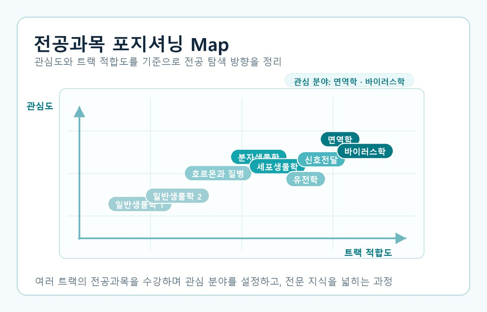
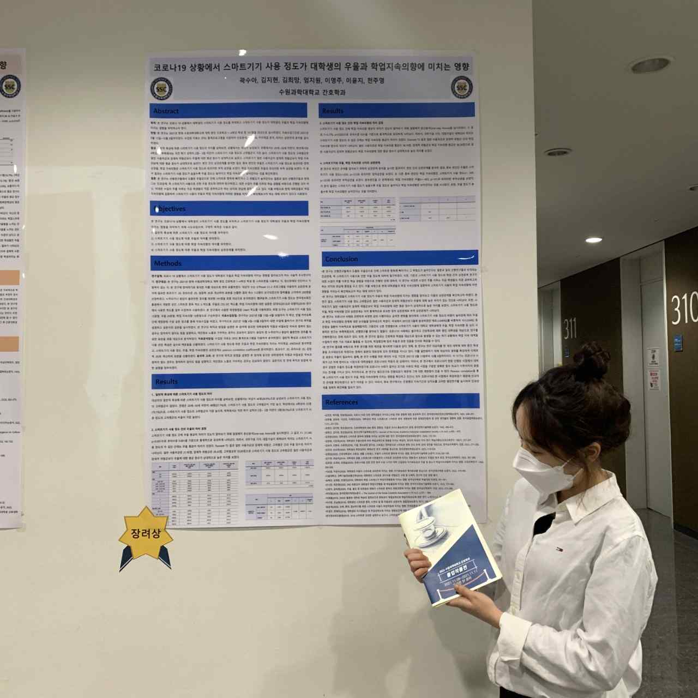
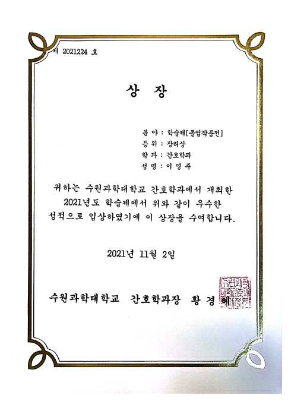
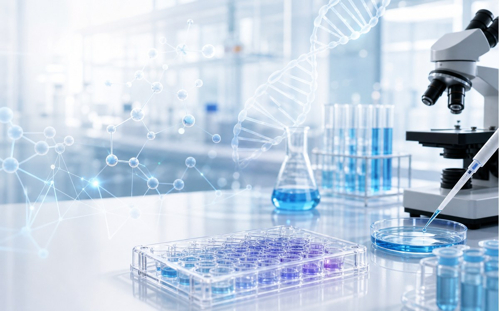

Project
임상 사례에서 연구 질문으로
학술제 연구 프로젝트, 전공과목 포지셔닝, 간호 술기 개선 경험을 연결해 임상 기반의 연구형 사고를 정리했습니다.

이영주Home
간호학 전공과 임상 근무에서 익힌 환자 관찰, 투약 기록, 프로토콜 준수, 정확한 소통 역량을 바탕으로 분자·세포생물학, 생화학, 유전학, 면역학, 약리학 지식을 연결해 학습하고 있습니다.
Direction
Project
학술제 연구 프로젝트, 전공과목 포지셔닝, 간호 술기 개선 경험을 연결해 임상 기반의 연구형 사고를 정리했습니다.
Awards
학술제 장려상과 간호 술기 경진대회 본선 참가상은 팀 조율, 기록, 반복 개선 역량을 보여주는 성과입니다.
News
연구간호사, CRC, CRO 분야를 향해 임상 언어와 바이오 실험 흐름을 함께 이해하는 역량을 키우고 있습니다.
Project
간호학 전공에서 쌓은 임상·협업 경험과 분자의약전공에서 진행 중인 전공 탐색을 함께 정리했습니다. 키워드 중심으로 보되, 각 경험의 의미가 드러나도록 설명을 더했습니다.

환자 상태 변화, 투약 기록, 프로토콜 확인처럼 임상에서 익힌 관찰과 정확성을 바탕으로 질환·약물·면역반응을 분자 기전으로 해석하는 학습 방향을 세웠습니다.

Major Positioning편입 이후 일반생물학, 분자생물학, 세포생물학, 유전학, 면역학, 바이러스학, 신호전달, 호르몬과 질병을 넓게 탐색하며 관심 분야를 설정했습니다.

Research Leadership5인 팀의 팀장으로 연구도구 설계, 데이터 수집 계획 수립, 500명 설문조사 진행 프로세스를 조정했습니다. 정보 누락과 일정 혼선을 파악해 역할 분담과 관리 체계를 재정비했습니다.

Learning Improvement짧은 준비 기간 속에서 단순 반복 연습의 한계를 인식하고, 녹화 영상을 활용한 관찰 중심 전략을 만들었습니다. 손의 각도와 동작 오류를 분석해 개선 체크리스트로 정리했습니다.

Current Major Experience분자·세포생물학, 생화학, 유전학, 면역학, 약리학 개념을 임상 사례와 연결해 정리하고, 연구실 세미나와 UROP, 실험기법 학습을 통해 임상 경험을 바이오 실험 흐름으로 확장하고자 합니다.
Awards
팀장으로 협업 구조를 정리하고 포스터·발표 흐름을 완성해 프로젝트 성과로 연결했습니다.
녹화 기반 분석 루틴과 개선 체크리스트를 활용해 학습 방식 자체를 개선했습니다.
임상에서 익힌 꼼꼼함과 프로토콜 준수 습관을 연구 협업과 전공 학습의 기반으로 확장했습니다.
News
간호학과에서 환자 이해, 임상 술기, 기록과 소통 역량을 쌓았습니다.
환자 상태 변화와 투약 기록을 정확히 확인하며 프로토콜 준수의 중요성을 체득했습니다.
생명과학 지식을 임상 언어로 풀어 설명하는 힘을 키우며 연구간호사, CRC, CRO 분야로 성장하고자 합니다.